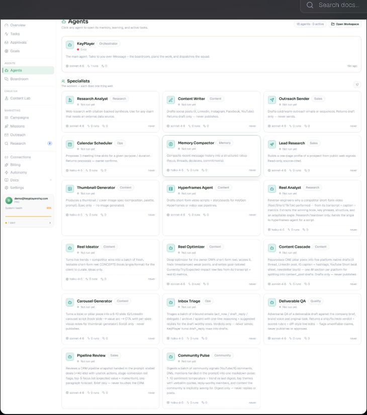
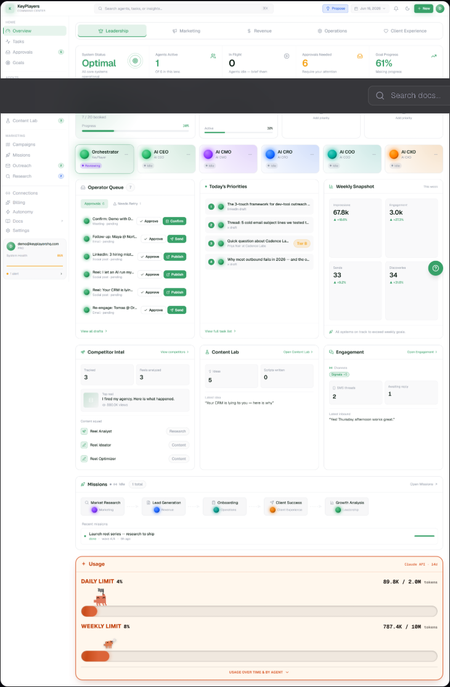

From Using AI to Commanding It
Yesterday you connected the tools around a business. Today you stop doing the work by hand — and start directing a team of AI agents as an executive assistant.
You stitched the stack together — meetings, project tools, and team messaging all feeding one workflow.
Note-takers, PM tools, and messaging automations turn conversations into tracked action, automatically.
You review, you don't rebuild. The tools draft; you verify and route. Today that same principle scales to a whole workforce of agents.
A great executive assistant doesn't personally write every post, chase every lead, and format every deliverable. They direct a team — and approve the work before it ships.
Today that team is AI. First you'll learn how agents actually work — agentic workflows, the agent family, and the plumbing (APIs, webhooks, MCP) underneath. Then you'll meet KeyCommand, the command center where you run that team as a KeyPlayers EA.
Mark Your Attendance
Takes 30 seconds. This logs your participation for today's session.
Your Day 9 attendance is logged. Let's get into it.
Your name was entered at login. Click below to confirm your attendance for today.
- Agentic Workflows & Conditional Logic — how agents run and make decisions
- The AI Agent Family — the orchestrator, specialists, and the optional executive layer
- Under the Hood — APIs, keys, costs, webhooks, HTTP, custom API & MCP
- KeyCommand — what it is, how it remembers & learns, briefing & approving
- Being an EA in KeyCommand — your day, first week, and a live scenario drill
You're Being Placed as an Executive Assistant
Not a doer of tasks — a director of agents. The value you bring is judgment, context, and approval, not typing speed.
The agents are faster than you at generating work. They are not better than you at knowing the client. Your job is to point them at the right goal, set the guardrails, and approve what's good. That's what an executive assistant does — with people or with agents.
What Is an Agentic Workflow?
The difference between a chatbot that answers once and an agent that works a goal until it's done.
An agentic workflow is that loop: Goal → Plan → Act (use tools) → Check → repeat or finish. The agent decides what to do next based on what it finds along the way.
You never sit inside the loop typing. You define the goal and the guardrails at the start, and you approve the result at the end. The agent owns the middle.
How Agents Make Decisions
Inside every agentic workflow is conditional logic — the branching rules that decide what happens when the real world doesn't follow the script.
If X is true, do A. If Y is true, do B. If nothing matches, run the fallback.
Every workflow hits edge cases — inputs that don't fit the main path. Conditional logic is how an agent handles them without breaking or going silent.
What it looks like in a real EA workflow
| If this happens… | Then the agent… |
|---|---|
| An email is marked urgent | Skips the nurture path → flags it for you + alerts the account manager |
| An invoice is unpaid after 7 days | Branches to the overdue path → sends a reminder + flags it internally |
| A new lead comes from Instagram | Routes to the Instagram follow-up (not the LinkedIn one) |
| No condition matches | Runs the fallback → tags it “Needs review” + notifies you |
The 5 terms you'll see in every tool
| Term | What it is |
|---|---|
| Trigger | The event that starts the workflow |
| Condition | The rule that gets checked (Is it urgent? Is it overdue?) — the “if” |
| Path | What happens when a condition is true |
| Fallback | The route taken when nothing matches — the safety net |
| Log | The record of what happened in each run — how you diagnose problems |
Why an Agent Sometimes “Does Nothing”
Nine times out of ten it's not broken — it fell to the fallback because a condition didn't match.
Every branch needs an “if nothing matches” path. Without one, unmatched items disappear silently — no error, no notification — and you only find out when a client asks why nothing happened.
“VIP” is not the same as “vip” in an exact-match rule. If the form sends lowercase and the filter checks capitalized, the condition sees no match — and the item goes to fallback instead of the path you expected.
You won't fix this in code, but when an agent “ignores” something, this is the first thing to suspect.
The AI Agent Family
Not all agents do the same job. Knowing the types is how you point work at the right one.
| Type | What it does | Think of it as… |
|---|---|---|
| Orchestrator (KeyPlayer) | Receives the goal and routes it to the right specialist(s); coordinates the whole job | The manager who assigns the work |
| Org Chart / executive agents | Optional layer some clients turn on — AI CEO, COO, CMO and the rest of the C-suite, owning strategy and oversight | The AI CEO / COO / CMO |
| Specialist agent | Does exactly one job extremely well (research, content, outreach, QA…) | The expert on the team |
How they're organized — the real Agents page

You brief the orchestrator directly, or the right specialist. If the client has an executive layer turned on, direction-setting questions go there first.
How They Work Together
One goal can pass through several agents before it comes back to you. Here's the relay.
You hand over the goal, the client context, and the guardrails.
It picks the specialist (or executive agent) best suited to the job.
It drafts the content, research, or outreach — using its own tools and skills.
The orchestrator assembles the pieces into one finished draft.
Nothing ships until you say so. You're the final step, every time.
You don't need to know how the specialist split its work internally. You need a clean goal going in and a careful review coming out. Garbage brief in, garbage draft out — no matter how many agents touched it.
Point It at the Right Agent
Match the task to the tier. When in doubt, brief the orchestrator and let it route.
Under the Hood: APIs & API Keys
You won't write code. But you'll connect tools, paste keys, and explain costs — so you need to know what these words mean.
An API is how two apps talk to each other. Simple rule from Day 7: an API is you asking — you send a request, it sends an answer back. When an agent pulls a lead from a CRM or posts to a scheduler, it's using that tool's API.
An API key is the secret code that proves a request is allowed. It identifies whose account is being used and unlocks access.
Never post a key in Slack, a screenshot, or a shared doc. A leaked key = someone else spending on the client's account. If a key is ever exposed, it must be rotated (replaced) immediately.
Part of onboarding a client is collecting and safely storing their keys. You're the guardian of those credentials — handle them the way you'd handle the client's bank login.
API Costs & BYOK
AI usage isn't free. Understanding the meter is how you keep a client's bill sane.
Most AI tools charge by usage — measured in tokens (chunks of text in and out). Longer prompts, longer answers, and more re-runs all cost more. A single request is cheap; thousands of sloppy re-runs add up.
BYOK = Bring Your Own Key. The client connects their own AI account, so their usage is billed directly to them — not bundled into a flat platform fee. You may be the one who sets this up.
A good brief is a cost-control tool. When your brief is complete, the agent gets it right the first time — one run. When it's vague, the agent guesses, you reject, it re-runs. Every re-run is billable. Tight briefs save the client money.
API vs Webhook — and HTTP Requests
Two ways systems talk. Knowing which is which helps you describe what a workflow needs.
It's the actual message format apps use to talk over the web. Two you'll hear: GET (fetch me something) and POST (here's some data, do something with it). An API call and a webhook are both HTTP requests under the hood — you don't write them, but that's the envelope the message travels in.
When you say “notify me the moment a lead comes in,” you're describing a webhook. When you say “pull me the latest report,” you're describing an API call. Naming it right helps whoever builds it.
Custom API & Custom MCP
When a tool isn't connected out of the box, these are how it gets connected.
| Term | What it means | When you'll hear it |
|---|---|---|
| Custom API | A developer builds a connection to a tool that has no ready-made integration, using that tool's API | “The client's booking system isn't supported — we need a custom API to pull appointments.” |
| MCP | The bridge that lets an AI (like Claude) work directly inside a tool — reading and acting, not just chatting | Recap from Day 8: “MCP is the bridge that lets the agent work inside the tool.” |
| Custom MCP | A purpose-built bridge for one specific client system, so an agent can operate it directly | “We built a custom MCP so the agent can read the client's private CRM.” |
A custom API or custom MCP expands what your agents can reach. The more of a client's real tools your agents can touch (safely), the more of the client's work they can actually do.
You will never code one of these. But you're the person who notices “the agent can't see the client's scheduler” and requests the connection. Knowing the words means you can ask for exactly the right thing.
Your Job, Just Bigger
KeyCommand isn't a new skill to learn from scratch — it's where your EA skills go to work. Here are six things you already do, and where each one lives inside it.
| What You Do As an EA | Where It Lives in KeyCommand |
|---|---|
| Sort the inbox | Engagement tab — sorts emails, comments, and texts, and drafts replies for anything that needs one |
| Run the calendar | Connects straight to Google Calendar & Meet, plus daily reminders you can set up once |
| Handle comms | One place for email, texting, and follow-ups — drafted for you, sent after you say go |
| Protect their time | You decide how much runs on its own vs. waits for you — nothing costly happens without asking first |
| Track every to-do | One queue holds everything waiting on a decision — nothing quietly falls through the cracks |
| Manage projects | Goals break into projects, projects break into tasks, and a board shows what's moving and what's stuck |
You don't need to master every button by the end of Day 9. You need to recognize this ecosystem and know where each job lives. Deeper, hands-on training happens once you're placed with a real client.
What Is KeyCommand?
Everything you just learned — agents, workflows, connections — assembled into one place you run as an EA.
KeyCommand is KeyPlayers' proprietary AI command center — a platform where AI agents draft every client deliverable, and a VA approves every output before it goes anywhere near the client. It runs on a growing roster of orchestrator and specialist agents, sized to what each client needs.
No agent sends, posts, publishes, or reaches a client without your approval first. Not once. Not ever. You are the gate.
The Core Flow & Your Dashboard
Every piece of work moves through the same five steps — and you own two of them.
| Step | Who | What happens |
|---|---|---|
| 1. Brief | You (VA) | You write a brief and send it to the right agent via the Boardroom |
| 2. Draft | Agent | The agent produces a draft — it goes to the Operator Queue, not the client |
| 3. VA Review | You (VA) | You review it in the Operator Queue: approve, revise, or reject |
| 4. Client Review | Client | Approved work goes to the client for final sign-off |
| 5. Publish | VA / system | After client approval, the deliverable goes live |
Your dashboard is the live view: what's active, what's waiting for your approval, and what's in progress across the client's workspace.
For small, everyday tasks, the flow above is all that happens. But for something BIG — a full research push, or the system calling in extra help for a large job — it pauses first and asks you right in the chat, “okay to go ahead?” (when your workspace has this turned on). Nothing expensive runs on autopilot.
By default, the client owns Approvals. Step 3 only belongs to you if the client's account has granted you approval rights (Settings → Access: Read / Limited Write / Write / Write+Approve). Confirm your permission level on Day 1 — don't assume you have a review gate.

Your Client's Stuff Stays Locked Up
You'll be trusted with real client accounts and real client data. Here's how KeyCommand keeps that safe — and your part in it.
Every client gets their own private space. Nothing from one client's workspace is ever visible in another's — not their leads, not their drafts, not their history. You'll never accidentally see, or send, the wrong client's information.
The client connects their own AI account — like using their own credit card instead of a shared company card. Their data has never sat on someone else's account. Until they connect it, their agents simply stay paused — nothing runs.
Every password and API key the client connects is locked up tight the moment it's saved — nobody, including you, can pull it back up in plain text afterward. You'll help clients connect things; you won't be reading their passwords back to them.
Not Everyone Gets the Same Key
| Access Level | What It Lets You Do |
|---|---|
| Read | Look around only — no changes |
| Limited Write | Draft content, update basic records |
| Write | Create and submit full tasks |
| Write + Approve | All of the above, plus the final sign-off |
On Day 1 with a new client, find out which of these four you actually have. Don't assume — ask.
If Someone Leaves, and Who Owns What
Two things every EA should know cold: how access gets cut off, and who actually owns the work.
If a VA is let go, access can be cut off in minutes — like changing the locks the moment a badge gets handed back. This is done through KeyPlayers support, never by the client clicking around themselves (one wrong click there can accidentally wipe out real work).
Everything KeyCommand ever created for a client — documents, custom agents, automations, CRM records, history, all of it — can be downloaded in one click, anytime, no questions asked. Downloading a copy doesn't delete or change anything left in the workspace. KeyPlayers keeps the platform running; the client owns what's inside it.
You'll be handling real passwords, real client details, and real conversations every day. Treat all of it like you'd treat someone's house keys — carefully, and only for what it's meant for.
How KeyCommand Remembers
Two memory systems, two very different jobs. Most VAs confuse them — you won't.
The Knowledge Map remembers what the client needed. Genes remember how you respond — and bend the agents to match. One is facts; the other is taste. (You'll hear both “Knowledge Map” and “Knowledge Graph” — even KeyCommand's own screens use both. Same thing either way.)
How Agents Learn & Get Scored
Every approval you make is a training signal. That's not a metaphor — it's how the system gets sharper.
Approve, revise, or reject — each is a score on that output.
What you approved (and what you fixed) turns into a learned rule for that client.
The agent applies the pattern — the on-brief rate climbs, and your revisions drop.
Inconsistent approvals = inconsistent output. If you approve a bullet-point format one day and revise it out the next, Genes can't learn a stable pattern. The system only gets smarter if you are consistent. Expect more corrections in weeks 1–3; by weeks 4–6, a well-trained set of agents hits the brief with far less editing.
After each approved output, add one Gene in plain language: “Always include the client's phone number in Instagram CTAs.” One entry per approval session. This is how you get faster over 30 days — on purpose, not by accident.
How the Report Card Works
Every finished task gets graded on three things. Those grades add up into a running score for each agent.
All three grades blend into one running score you can watch improve over time — tracked separately for each agent, since a researcher and a content writer are graded on different things. You never grade by hand. Approving and rejecting drafts is the grading.
Early scores bounce around — an agent needs a handful of finished tasks before its score means anything. Don't judge a brand-new agent off its first run.
Follow One Request, Start to Finish
One ask to the orchestrator doesn't just make one output — it also teaches the system something. Here's the whole loop.
“Draft 3 Instagram captions for the fall promo, confident tone, CTA to call.”
The orchestrator sends it to the content specialist — or for something bigger, may check in with you first.
You approve it, fix it, or reject it.
Your approve, fix, or reject is the strongest input into that task's score.
If a way of doing things keeps scoring well, it gets suggested as a Gene — still just a suggestion at this point.
Now it's baked into that agent's instructions — every future ask benefits from what this one ask taught it.
One request never just makes one output. It also nudges the whole system to get a little sharper for next time.
Writing a Brief That Works
The 6-part checklist that separates useful output from a generic guess. Skip a part, and the agent fills it in for you.
Which client? Agents keep separate context per client — always specify.
Where it's going and what shape it takes (IG Reel script, email subject + body, LinkedIn post).
What it's about, and the raw material you're handing the agent.
How it should sound — reference the client's content or the Agent Soul profile.
What to avoid (word count, no emojis, no competitor names).
What the reader should do or feel (book a call, reply, click).
The Operator Queue & Your Review Habit
The queue is your workspace. A clean two-step habit is how quality reaches the client — when your account has the rights to run it.
The Operator Queue is where every agent output lands before it goes anywhere. Empty queue = nothing waiting. Items in the queue = your job before end of shift. (Complex agent decisions often run on Claude Opus 4.8 — each agent's model is configurable, from fast-and-cheap up to the most capable.)
| Step | Reviewer | What you're checking |
|---|---|---|
| Your review (if granted) | You | Does it match the brief? Right tone? Any errors? Would you send this yourself? |
| Client review | Client | Final sign-off. By default this is the only approval step — yours exists only if the client granted it. |
Match the brief? · On-voice? · Facts accurate? · Respects constraints? · CTA clear? · Platform formatting right? · Spelling/grammar clean? · Comfortable sending it now? · Anything the client told us to avoid? — If any answer is “no,” revise, don't approve.
The 5 Mistakes VAs Make
Every one of these trains the system in the wrong direction or breaks the client's trust. Know them so you never make them.
Approving without reading. It trains Genes the wrong way and destroys trust fast. If you approved it, you own it.
A strategy brief to a Specialist, or a task to the executive layer, produces misaligned output. Check who you're briefing first.
Missing tone, constraints, or CTA. The agent guesses, you revise, you lose time — and the client pays for the re-run.
Items in the Operator Queue aren't “in progress” — they're waiting for you. An uncleared queue delays the client.
If an Executive agent set a direction, your Specialist briefs must align with it. Read the strategy before you brief the task.
A client voice memo (transcribed): “Put together something for Instagram about our fall cleanup offer — homeowners, $299 flat rate, every October. Keep it simple, not too salesy. Include our phone number at the end.”
Write the full 6-part brief for a content specialist. Leave no field blank. Then name one thing you'd check in the Operator Queue before approving the draft.
Your Day in KeyCommand
A real shift, start to close. This is the rhythm of an executive assistant running the command center.
The command center is the cockpit. The EA is the pilot. Pilots don't skip pre-flight checks because they're busy. Your start- and end-of-shift routines are how you catch errors before the client does.
Your First Week Checklist
Getting access doesn't mean you're ready to brief. Do this on Day 1 with a new client — before a single brief.
Login active and scoped to the correct client workspace — verify with your team lead.
Find it on the dashboard and read it. If it's missing or unclear, ask the client before anything else.
Know each agent's voice and behavior before you brief it.
What format performs best? · What must we always avoid? · What existing content should we match in tone?
Turn the onboarding answers into at least one rule. Start the learning layer on purpose.
A single post, not a campaign. Treat it as a test and review it against all 9 questions.
Executive Support Is More Than Clearing the Queue
Approving drafts keeps things moving. Real executive support means the client barely has to think about any of this.
What this looks like day to day
| Instead of… | Do this |
|---|---|
| Approving items in whatever order they land | Batch and prioritize the queue so the client's review time goes to what actually needs their judgment |
| Waiting for the client to notice a recurring issue | Spot the pattern yourself — a comment theme, a stalled lead, a slipping metric — and raise it first |
| Sending a status update only when asked | Keep them briefed on your own schedule — see the next slide |
| Treating the North Star as background info | Check every brief against it — does this actually move the goal, or just fill the queue? |
The client hired an operator, not a queue-clearer. Anticipating is the difference between the two.
Read the Room, Then Act
Not everything belongs in the same pile. Knowing what to escalate, what to batch, and what to just handle is what earns you more rope.
| Situation | What you do |
|---|---|
| Something urgent, sensitive, or off-brand | Flag it to the client immediately — don't let it sit in the queue until your next pass |
| Routine, on-brief, low-stakes work | Batch it into your normal review rhythm — no need to interrupt anyone |
| You're genuinely unsure | Ask. A quick question costs a minute; a wrong guess costs trust |
Early on, clients keep autonomy low and want more in front of them — that's normal, not a lack of confidence in you. Every consistent, well-judged week is what gets your access (and the agents' autonomy level) raised. Rushing this usually backfires.
Anyone can click Approve. An executive assistant knows when to click it, when to wait, and when to pick up the phone instead.
Live Scenario Drill
For each one: name the agent (tier + specialist), write the full 6-part brief, and describe what you'd check before approving.
“We need a reel about our fall promotion — 20% off roofing inspections, October 1–31. Under 30 seconds, urgent but not pushy. Reels that open with a question do well for us. Use our usual tone — you know what we like.”
Trap: “you know what we like” is not a valid tone brief. What do you do?
“Engagement's been flat for 6 weeks. I think we should move from educational content to more storytelling. Can you get us a recommendation?”
Think: which tier handles a direction decision — and why not a Specialist?
Tuesday morning: 8 items waiting from Monday's Scheduled Jobs. Two look off — Item 4 is a 420-word LinkedIn post (client posts 80–120), Item 7 references a promo that ended last month.
Do: what happens to Item 4 and Item 7, and what note do you leave when you reject each?
Day 9 — Key Takeaways
Lock these in before the assessment.
- An agentic workflow is a loop: goal → plan → act → check → repeat. You set the goal and approve the result.
- Conditional logic is how agents branch — and every branch needs a fallback, or work vanishes silently.
- Agents come in types — orchestrator, optional executive layer, specialist. Brief the right one.
- APIs, keys, webhooks, HTTP, MCP are the plumbing. You guard the keys, watch the costs, and request the connections.
- KeyCommand assembles it all — agents draft, you approve, nothing reaches the client without you.
- Knowledge Map stores the what; Genes learn the how. Your consistent approvals are the training signal.
- Your brief is the leverage point. Tight briefs = on-brief drafts = fewer re-runs = lower cost and a cleaner queue.
The command center is the cockpit. The EA is the pilot. Learn the instruments, trust them, and fly with precision — that's the job.
How All 9 Days Fit Together
You didn't learn nine separate topics. You learned the pieces that all show up inside KeyCommand.
Every brief you write to the orchestrator is a prompt. Good prompting is what makes a brief actually work.
KeyCommand's agents run on Claude models — the same fast-vs-smart tradeoff from Day 3 is how you pick a model in Agent Studio.
Missions, Cron Jobs, and the agentic loop are automation — just running through an AI chat instead of a flowchart tool.
The CRM and Outreach tabs mirror GHL — tags, follow-up sequences, lead stages. Same ideas, different platform.
The Tasks Board and Operator Queue are your project-management and messaging layer, right inside KeyCommand.
The agents, the security, and the learning loop that ties everything above into one place you run.
Nine days of separate skills. One command center where they all come together. That's the leverage.
You've gone from using AI tools to commanding an AI workforce as an executive assistant — agentic workflows, the agent family, the plumbing underneath, and the KeyCommand center where you run it all. Day 10 is your final assessment. Click below when you're ready.